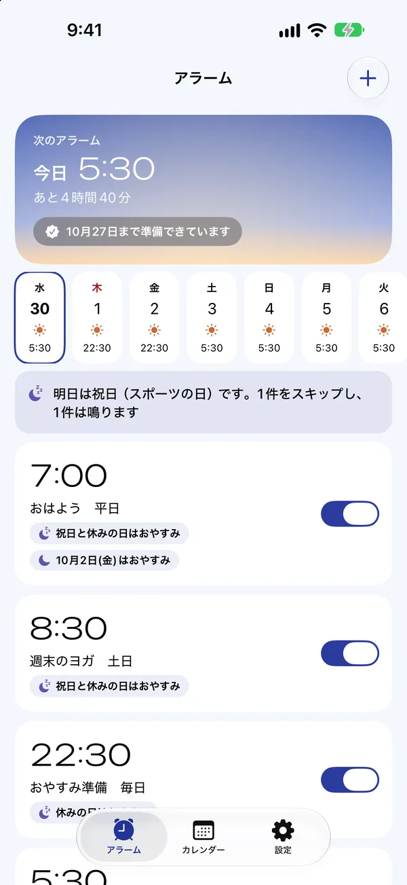
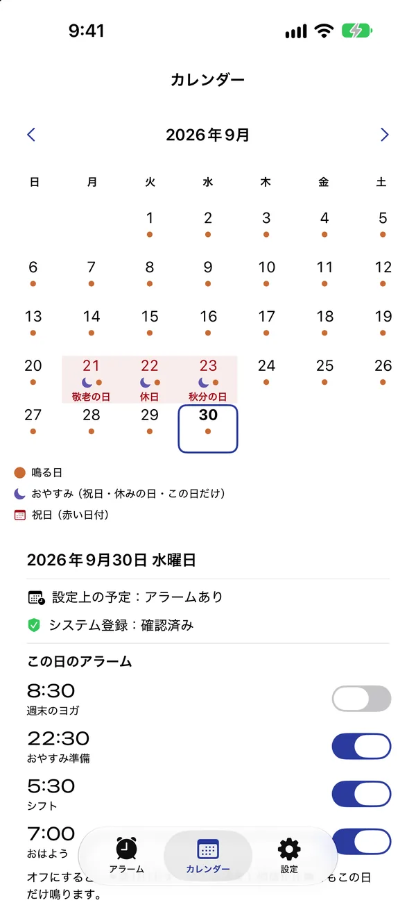

祝日アラームの
使い方
はじめての設定から、シフトや休日出勤まで。iOS 26 以降と、アラームの許可が必要です。
1. アラームをつくる
「アラーム」画面の右上の＋を押して、起きる時刻を選びます。
「祝日はスキップ」がオンになっていれば、日本の祝日（振替休日・国民の休日を含む）はおやすみします。保存する前に、下の「これからの予定」で鳴る日と休む日を確認できます。

2. 繰り返しを選ぶ
- 毎週：鳴らしたい曜日を選びます。
- 隔週：曜日と「鳴る週の基準日」を選びます。
- 毎月：「第2」「第4」「最終」などと曜日を選びます（例：第2・第4土曜）。
- シフト：周期の1日目と、何日でひと回りするか（2〜28日）を選び、鳴る日をタップします。4勤2休なら6日周期で最初の4日です。
- 一回：日付を選んで一度だけ鳴らします。祝日の設定には関係なく鳴ります。
隔週・毎月・シフトはプレミアム（買い切り ¥600）の機能です。1.x を購入済みの方は、そのまま使えます。
3. 有休や自分の休みを追加する
「設定」の「有休・自分の休みを追加」から、日付または期間を選びます。アラームの「お休みの日もスキップ」をオンにすると、その日は鳴りません。年末年始（12/29〜1/3）は、必要な方だけオンにできるプリセットです。
4. 明日だけ休む・この日だけ鳴らす
アラームを右にスワイプして「次の1回を休む」。次の1回だけおやすみして、その次からはいつもどおり鳴ります。下に出る「取り消す」で戻せます。
カレンダーで日付をタップすると、アラームごとに「この日は鳴らす」「この日は休む」を切り替えられます。祝日だけど出勤、という日に使ってください。
ウィジェット、コントロールセンター、Siri（「祝日アラームで明日をスキップ」）からも使えます。

5. 音を選んで、テストする
アラーム編集の「サウンド」で試聴して選びます。試聴しただけでは変わらないので、編集画面に戻って保存してください。「この音で2分後にテスト」で、実際のアラームとして鳴らして確かめられます。
うまく鳴らないときは
- iPhone の「設定」→「祝日アラーム」で、アラームが許可されているか確認します。
- アラームがオンになっているか、繰り返しと休みの日が思ったとおりか、ホームの14日間の予定で確認します。
- ホームの上に「登録状況を確認してください」と出ていたら、「もう一度確認」を押します。
- アラームは最大28日先まで登録し、アプリを開いたときやアラームを止めたときに延ばします。長く開かないときは、切れる前にお知らせします（通知を許可した場合）。
それでも困ったときは、お問い合わせから、iPhone の機種・iOS のバージョン・アプリのバージョン・設定内容を添えてご連絡ください。
祝日の出典：内閣府「国民の祝日について」